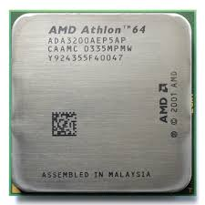

The AMD Athlon was the first x86-compatibale microprocesser designed by AMD. It was the first AMD processer to reach speeds in the gigahertz. It was distributed on June 23, 1999. The AMD Athlon was a direct competetor to the nre Intel Pentium chip.
Source: "https://en.wikipedia.org/wiki/Athlon"